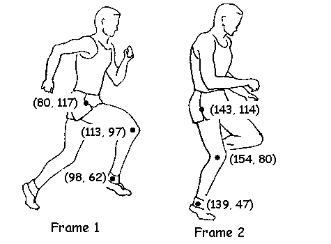
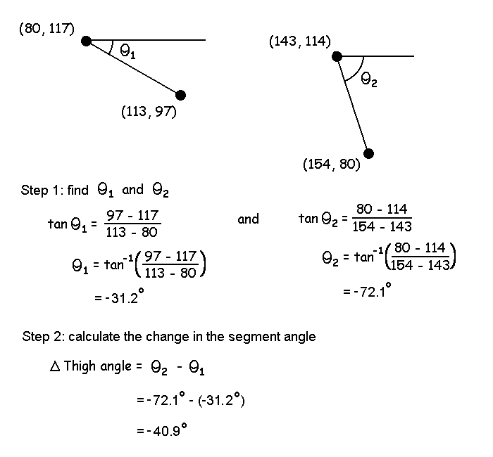
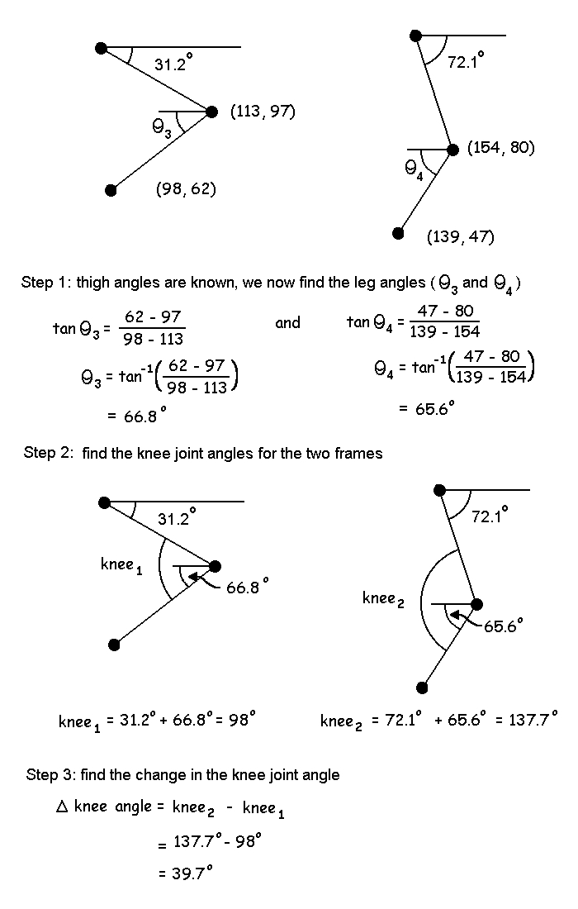

Angular Kinematics
The diagram below shows the coordinates of the hip, knee and ankle of a runner at two instants in time.
Find the angular displacement of the thigh segment in the diagram given the XY coordinates of the hip and knee markers for Frame 1 and Frame 2.
Solution:
The first step is to determine the segment angle of the thigh in each frame. The second step is to calculate the change by taking the difference between the two angles.

Find the angular displacement of the knee joint.
Solution:
The first step is to find the segment angles of the thigh and leg for both frames. The second step is to then calculate the knee angle as the relative angle between the thigh and leg. The last step is to calculate the change in the knee angle using the difference between Frame 1 and Frame 2.
